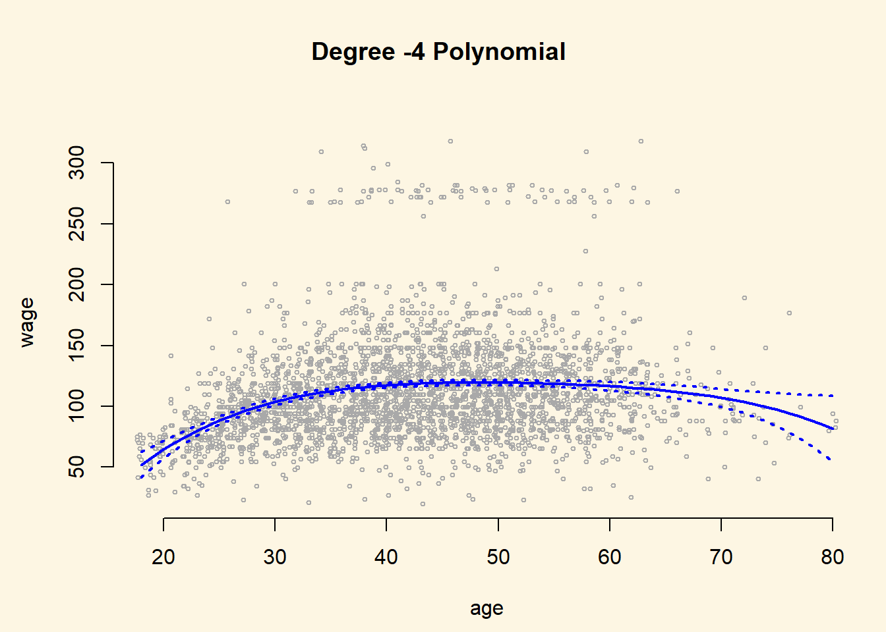

Chapter 6 All non-linear (polynomials to splines)
6.1 Seminar
In this exercise, we will learn how to model non-linearities in generalised linear models. This exercise is based on based on James et al. 2013. We begin by loading that ISLR package and attaching to the Wage dataset that we will be using throughout this exercise. When we attach a dataset, we do not need to write dataset.name$variable.name to access a variable but we can instead just write variable.name to access it.
Note: We need to install the ISLR package if it is not installed alread like so: install.packages("ISLR")
Note2: The Wage dataset is spelled with a capital W.
# clear workspace, load ISLR, attach wage data set
rm(list=ls())
library(ISLR)
attach(Wage)
?Wage # codebook6.1.1 Polynomial Regression
Let’s fit a linear model to predict wage with a forth-degree polynomial using the poly() function.
Note: The dependent variable wage is spelled with a lower case w.
# linear regression on wage, with age up to a 4th degree polynomial
fit <- lm(wage ~ poly(age, 4), data = Wage)
coef(summary(fit)) Estimate Std. Error t value Pr(>|t|)
(Intercept) 111.70361 0.7287409 153.283015 0.000000e+00
poly(age, 4)1 447.06785 39.9147851 11.200558 1.484604e-28
poly(age, 4)2 -478.31581 39.9147851 -11.983424 2.355831e-32
poly(age, 4)3 125.52169 39.9147851 3.144742 1.678622e-03
poly(age, 4)4 -77.91118 39.9147851 -1.951938 5.103865e-02We can also obtain raw instead of orthogonal polynomials by passing the raw = TRUE argument to poly(). The coefficients will change the fit should be largely unaffected. It is not advisable to use the raw argument because it introduces unnecessary multicollinearity into the model.
Estimate Std. Error t value
(Intercept) -1.841542e+02 6.004038e+01 -3.067172
poly(age, 4, raw = TRUE)1 2.124552e+01 5.886748e+00 3.609042
poly(age, 4, raw = TRUE)2 -5.638593e-01 2.061083e-01 -2.735743
poly(age, 4, raw = TRUE)3 6.810688e-03 3.065931e-03 2.221409
poly(age, 4, raw = TRUE)4 -3.203830e-05 1.641359e-05 -1.951938
Pr(>|t|)
(Intercept) 0.0021802539
poly(age, 4, raw = TRUE)1 0.0003123618
poly(age, 4, raw = TRUE)2 0.0062606446
poly(age, 4, raw = TRUE)3 0.0263977518
poly(age, 4, raw = TRUE)4 0.0510386498There are several ways to specify polynomials. These are, however a little less convenient.
(Intercept) age I(age^2) I(age^3) I(age^4)
-1.841542e+02 2.124552e+01 -5.638593e-01 6.810688e-03 -3.203830e-05 A more compact version of the same example uses cbind() and eliminates the need to wrap each term in I(). The output is less readable though.
(Intercept) cbind(age, age^2, age^3, age^4)age
-1.841542e+02 2.124552e+01
cbind(age, age^2, age^3, age^4) cbind(age, age^2, age^3, age^4)
-5.638593e-01 6.810688e-03
cbind(age, age^2, age^3, age^4)
-3.203830e-05 We can create an age grid (minimum age to maximum age) and pass the grid to predict(). We can set the argument se=TRUE in the predict() function which will return a list that includes standard errors of the outcome. We can use these to an upper and lower bound of our estimate of \(y\).
# minimum and maximum values of age variable
agelims <- range(age)
age.grid <- seq(from = agelims[1], to = agelims[2])
# se=TRUE returns standard errors
preds <- predict(fit, newdata = list(age = age.grid), se = TRUE)
# confidence intervals as estimate + and - 2 standard deviations
se.bands <- cbind(preds$fit + 2 * preds$se.fit, preds$fit - 2 * preds$se.fit)We can plot the data and add the fit from the degree-4 polynomial. We set the margins and outer margins in our plot the later plot a title that will be the overall title for two plots that we plot next to each other. The function matlines() lets us draw the lines fo the uncertainty bounds in one go.
# set margins to plot title in margins
par(mfrow = c(1, 2), mar = c(4.5, 4.5, 1, 1), oma = c(0, 0, 4, 0))
plot(wage ~ jitter(age,2), xlim = agelims, cex = 0.5, col = "darkgrey", bty = "n",
xlab = "age")
# overall plot window title
title("Degree -4 Polynomial ", outer = TRUE)
# line for mean estimate
lines(age.grid, preds$fit, lwd = 2, col = "blue")
# ~95% ci's
matlines(age.grid, se.bands, lwd = 2, col = "blue", lty = 3)
We compare the orthogonolized polynomials that we saved in the object called fit with the polynomials that plain polynomials sved in fit2. The difference will be close to \(0\). We predict the outcome from the fit with the raw polynomials and take the diffence to the fit with the independent linear combinations of the powers of age.
preds2 <- predict(fit2, newdata = list(age = age.grid), se = TRUE)
# average difference
mean(preds$fit - preds2$fit)[1] -1.752311e-11[1] 7.81597e-11When we have only predictor variable and and its powers we use the coef() function to see whether the powers of the variable improve in-sample model fit.
Estimate Std. Error t value Pr(>|t|)
(Intercept) 111.70361 0.7287647 153.2780243 0.000000e+00
poly(age, 5)1 447.06785 39.9160847 11.2001930 1.491111e-28
poly(age, 5)2 -478.31581 39.9160847 -11.9830341 2.367734e-32
poly(age, 5)3 125.52169 39.9160847 3.1446392 1.679213e-03
poly(age, 5)4 -77.91118 39.9160847 -1.9518743 5.104623e-02
poly(age, 5)5 -35.81289 39.9160847 -0.8972045 3.696820e-01With more variables, we use the anova() function and look at the F-test to decide whether in-sample fit improves by including powers of a variable.
fit.1 <- lm(wage ~ age, data = Wage)
fit.2 <- lm(wage ~ poly(age, 2), data = Wage)
fit.3 <- lm(wage ~ poly(age, 3), data = Wage)
fit.4 <- lm(wage ~ poly(age, 4), data = Wage)
anova(fit.1, fit.2, fit.3, fit.4, fit.5)Analysis of Variance Table
Model 1: wage ~ age
Model 2: wage ~ poly(age, 2)
Model 3: wage ~ poly(age, 3)
Model 4: wage ~ poly(age, 4)
Model 5: wage ~ poly(age, 5)
Res.Df RSS Df Sum of Sq F Pr(>F)
1 2998 5022216
2 2997 4793430 1 228786 143.5931 < 2.2e-16 ***
3 2996 4777674 1 15756 9.8888 0.001679 **
4 2995 4771604 1 6070 3.8098 0.051046 .
5 2994 4770322 1 1283 0.8050 0.369682
---
Signif. codes: 0 '***' 0.001 '**' 0.01 '*' 0.05 '.' 0.1 ' ' 1With glm() we can also fit a polynomial logistic regression. Here, we create a binary variable that is 1 if wage > 250 and 0 otherwise.
Similar to lm() we use the predict() function again and also obtain standard errors by setting se=TRUE.
Note: If we do not set type="response" in the predict() function, we get the latent \(y\) as \(X\beta\). We have to send those values through the link function to get predicted probabilities. We do this, so that we can estimate the standard errors on the latent \(y\). We then send these through the link function as well. This ensures that our confidence intervals will never be outside the logical \([0, 1]\) interval for probabilities. If we would not do this, we could get standard errors outside the \([0, 1]\) interval.
# predict latent y
preds <- predict(fit, newdata = list(age = age.grid), se = TRUE)
# send latent y through the link function
pfit <- 1 / (1 + exp(-preds$fit))
# error bands calculate on the latent y
se.bands.logit <- cbind(preds$fit + 2 * preds$se.fit, preds$fit - 2 * preds$se.fit)
se.bands <- 1 / (1 + exp(-se.bands.logit))We add the results next to the plot where wage is continuous. With the points() function we add the actual data to the plot. The argument pch="|" draws a bar as the symbol for each point. Also notice the y-coordinate of each point. In the plot() function we set the range of the y-axis with ylim = c(0, 0.2) to range from \(0\) to \(0.2\). If the true outcome is \(1\) we want to draw the | at \(y=0.2\) and otherwhise at \(y=0\). We achieve this with I((wage > 250)/5). Play around to see why.
plot(I(wage > 250) ~ age, xlim = agelims, type = "n", ylim = c(0, 0.2))
# add data to the plot
points(jitter(age), I((wage > 250)/5) , cex = 1, pch = "|", col = " darkgrey ")
# mean estimate
lines(age.grid, pfit, lwd = 2, col = "blue")
# 95 ci
matlines(age.grid, se.bands, lwd = 2, col = "blue", lty = 3)Notice, that the confidence interval becomes very large in the range of the data where we have few data and no \(1\)’s.
6.1.2 Step Functions
Instead of using polynomials to create a non-linear prediction, we could also use step functions. With step functions we fit different lines for different data ranges.
We use the cut() function to create equally spaced cutpoints in our data. We use the now categorical variable age as predictor in our linear model.
(17.9,33.5] (33.5,49] (49,64.5] (64.5,80.1]
750 1399 779 72 # fit the linear regression with the factor variable age that has four categories
fit <- lm(wage ~ cut(age, 4), data = Wage)
# the first category is the baseline.
coef(summary(fit)) Estimate Std. Error t value Pr(>|t|)
(Intercept) 94.158392 1.476069 63.789970 0.000000e+00
cut(age, 4)(33.5,49] 24.053491 1.829431 13.148074 1.982315e-38
cut(age, 4)(49,64.5] 23.664559 2.067958 11.443444 1.040750e-29
cut(age, 4)(64.5,80.1] 7.640592 4.987424 1.531972 1.256350e-016.1.3 Splines
We use the splines package to fit splines.
We first use bs() to generate a basis matrix for a polynomial spline and fit a model with knots at age 25, 40 and 60. bs will by default fit a cubic spline with the specified number of knots. To deviate from a cubic spline, change the argument degree to some other value.
fit <- lm(wage ~ bs(age, knots = c(25, 40, 60)), data = Wage)
pred <- predict(fit, newdata = list(age = age.grid), se = TRUE)
par( mfrow = c(1,1))
plot(jitter(age,2), wage, col = "gray", xlab = "age", bty = "n")
lines(age.grid, pred$fit, lwd = 2)
lines(age.grid, pred$fit + 2 * pred$se, lty = "dashed", lwd = 2)
lines(age.grid, pred$fit - 2 * pred$se, lty = "dashed", lwd = 2)